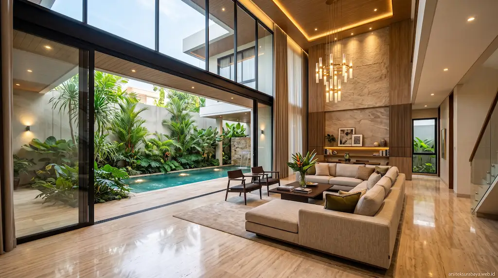

1. Esensi Desain Rumah Mewah Modern Minimalis di Surabaya
Tren arsitektur hunian premium di Kota Surabaya telah mengalami pergeseran signifikan dalam beberapa tahun terakhir. Konsep kemewahan tidak lagi diukur dari ornamen klasik yang rumit atau pilar-pilar tebal yang masif, melainkan dari kebersihan garis arsitektur, kepresisian detail material, dan keharmonisan antara ruang dalam dengan alam sekitarnya. Konsep rumah mewah modern minimalis hadir sebagai jawaban ideal bagi pemilik rumah yang mendambakan kepraktisan, privasi, dan estetika yang timeless.
Membangun hunian mewah di Surabaya menuntut pendekatan desain yang cerdas. Sebagai kota metropolitan pesisir dengan paparan sinar matahari terik dan suhu udara yang cukup tinggi, desain minimalis tanpa perhitungan iklim tropis akan membuat interior terasa panas dan boros energi pendingin ruangan. Di sinilah peran vital jasa arsitek profesional untuk memadukan nilai kemewahan visual dengan strategi responsif iklim tropis lokal.
2. Pemetaan Wilayah Potensial: Surabaya Barat, Timur, & Selatan
Layanan perancangan arsitektur dari Arsitek Surabaya Studio mencakup berbagai wilayah pemukiman strategis yang memiliki karakteristik lahan dan regulasi kawasan yang unik. Berikut adalah pemetaan kawasan potensial tempat tumbuhnya hunian mewah modern minimalis di Surabaya:
- Surabaya Barat (Citraland, Graha Famili, Pakuwon Indah, & Bukit Darmo Golf): Koridor ini merupakan pusat perkembangan hunian elit terbesar di Surabaya. Kaveling di area Sambikerep, Lakarsantri, Wiyung, dan Dukuh Pakis memiliki luasan sedang hingga besar. Karakteristik klien di kawasan ini menginginkan tampilan fasad yang megah dengan kombinasi batu alam impor, secondary skin kayu, kolam renang privat, serta lanskap taman tropis yang asri.
- Surabaya Timur (Pakuwon City, MERR, Sukolilo, & Dharmahusada): Wilayah perkotaan yang sangat pesat dengan pertumbuhan ekonomi tinggi di Kecamatan Mulyorejo dan Rungkut. Hunian mewah di area Laguna Pakuwon City umumnya memanfaatkan lebar muka lahan secara efisien dengan mengusung gaya modern kontemporer 2 hingga 3 lantai yang dilengkapi dengan ruang kerja pintar dan pencahayaan skylight alami.
- Surabaya Selatan (Gayungsari, Jemursari, Ketintang, & Wonocolo): Lingkungan pemukiman yang mengutamakan ketenangan, kerapian, dan nuansa hijau. Kaveling hunian di wilayah Gayungan dan Jambangan sangat cocok dirancang dengan konsep rumah tumbuh berarsitektur tropis minimalis, memiliki halaman samping yang luas, serta sistem drainase anti banjir yang terintegrasi.
3. Elemen Kunci Arsitektur Mewah Tropis yang Adhem & Sejuk
Agar rumah mewah berkonsep minimalis tetap nyaman dihuni dan terasa sejuk sepanjang hari, kami mengimplementasikan beberapa elemen teknis arsitektur tropis modern:
- Penggunaan Secondary Skin & Kisi-Kisi Aluminium/Kayu: Fasad yang menghadap ke arah Barat atau Timur dilapisi dengan panel kisi-kisi atau secondary skin. Elemen ini berfungsi membiaskan radiasi panas sinar matahari langsung tanpa mengurangi intensitas cahaya alami yang masuk.
- Tritisan Atap Lebar (Overhang Roof): Menjaga dinding dan bukaan kaca dari terpaan air hujan deras serta meredam paparan sinar matahari langsung di siang hari.
- Material Mewah Tahan Cuaca: Pemilihan material finishing luar seperti granit tile besar, batu marmer bertekstur, besi perlakuan khusus, dan cat eksterior weatherproof menjaga tampilan bangunan tetap bersih dan mewah meskipun diterpa cuaca ekstrem Surabaya.

4. Integrasi Open Plan, Void Tinggi, dan Pencahayaan Alami
Penataan interior pada rumah mewah modern minimalis difokuskan pada keterbukaan dan kelancaran sirkulasi antar ruang. Penggunaan sekat tebal dikurangi dan digantikan dengan konsep open plan layout yang menghubungkan ruang tamu, ruang keluarga, dan ruang makan secara harmonis.
Adanya void atau plafon ganda berketinggian 6 hingga 7 meter di area tengah rumah menciptakan efek cerobong udara (stack effect). Udara panas akan terdorong naik dan keluar melalui bukaan atas, sementara udara dingin ditarik masuk dari area taman atau kolam renang. Selain itu, bukaan kaca berukuran masif memungkinkan cahaya matahari masuk merata, sehingga menghemat konsumsi listrik lampu di siang hari.
5. Kepastian Struktur, Legalitas PBG, dan Estimasi RAB Transparan
Proses perencanaan hunian mewah tidak hanya berhenti pada konsep estetika 3D. Tim arsitek kami menyiapkan dokumen teknis Detail Engineering Design (DED) yang mencakup perhitungan struktur beton bertulang, gambar instalasi listrik dan sanitasi (MEP), serta kelengkapan berkas untuk pengurusan Persetujuan Bangunan Gedung (PBG) di Dinas Perumahan Rakyat dan Kawasan Permukiman Kota Surabaya.
Setiap rancangan dilengkapi dengan Rencana Anggaran Biaya (RAB) terperinci yang mencakup volume pekerjaan dan analisis harga satuan. Hal ini memberikan kepastian bagi Anda agar proses pembangunan konstruksi berjalan tepat waktu, presisi, serta terhindar dari potensi pembengkakan biaya yang tidak terduga.
6. Wujudkan Hunian Impian Bersama Tim Arsitek Surabaya Studio
Merancang rumah tempat tinggal keluarga adalah investasi jangka panjang yang sangat berharga. Bersama Arsitek Surabaya Studio, Anda akan mendapatkan pendampingan penuh mulai dari tahap analisis lahan, studi tata ruang, visualisasi 3D realistis, hingga pengawasan berkala di lapangan.
Jadikan lahan Anda di Citraland, Graha Famili, Pakuwon City, maupun lokasi strategis lainnya di Surabaya sebagai mahakarya arsitektur yang mewah, sejuk, dan membanggakan.